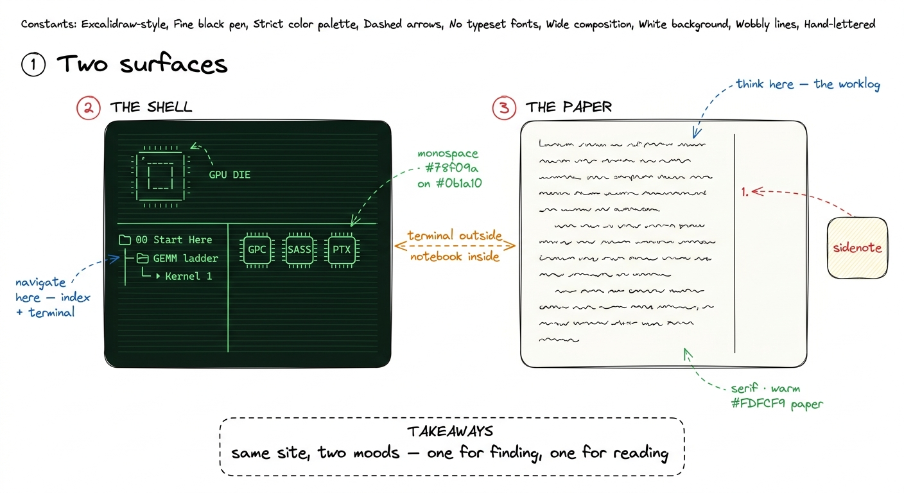
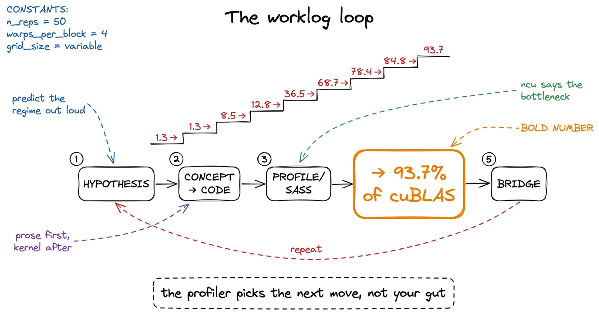
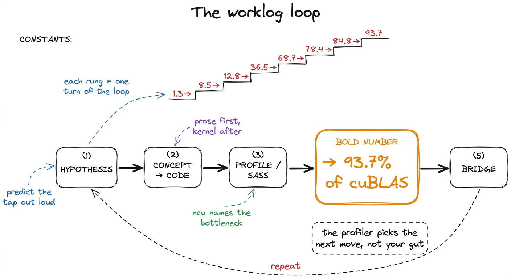

How to use this site
This site is built the way I actually learned GPU kernels: by writing the dumbest version of a thing, profiling it, being embarrassed by the number, and then earning each improvement one measurement at a time. Nothing here is a lecture that hands you a finished answer. Every optimization is a small argument — a hypothesis, a kernel, a profile, and a bold number that either vindicates the hypothesis or tells me I was wrong. The whole thing is a worklog you can read over my shoulder, and, more importantly, one you can run.
Before you dive in, it helps to know how the site is put together, because there are two surfaces here that look nothing alike on purpose, and there are a couple of parallel tracks you can move through at different speeds. This page is the map.
Two surfaces: the terminal and the paper
The first thing you'll notice is that the site has a split personality, and that split is deliberate.
The shell — the home page, the section indexes, the left sidebar with the collapsible article tree — is a dark terminal. Phosphor green on near-black, monospace everything, an ASCII-art GPU die on the landing page, term chips like GPC and SASS you can click.1 The shell is modeled on Modal's excellent GPU Glossary, which organizes everything into device-hardware / device-software / host-software / performance. If you want a pure reference — "what exactly is a warp scheduler" — that glossary is the companion to this site, and I link into it constantly. The shell is where you navigate. It is the index, the terminal you keep open in the corner, the thing that tells you where the kernels live.
The article pages — like the one you are reading — are the opposite: warm off-white paper, a serif body, a wide right margin full of sidenotes, generous leading. This is the notebook. It is where I think. The contrast between the two is the whole point: terminal on the outside, notebook on the inside. When you're hunting for a topic you're in the green terminal; when you're actually working through an idea you're on paper.

figure rendering · The two surfaces. The green shell is for navigation; the paper articleThe worklog method
Every kernel article on this site follows the same loop, and once you see it you'll see it everywhere. It is not a stylistic tic — it is the actual method of performance engineering, compressed into a page.
- Hypothesis. I state, in one sentence, why the next change should help and what regime I think we're in. "This is memory-bound, so staging tiles in shared memory should cut the HBM traffic." Predicting out loud is non-negotiable; a prediction is a thing that can be wrong, and being wrong is where the learning is.
- Concept, then code. I explain the idea in prose first — the tiling, the swizzle, the async copy — and only then show the kernel. Code before concept teaches you to copy; concept before code teaches you to derive.
- Profile as evidence. Then I point Nsight Compute at it, or read the SASS (the actual machine assembly the GPU runs), and let the profiler — not my intuition — say what the bottleneck is. SASS listings here are evidence, not decoration.
- A bold number. Every step ends with a number in bold: a fraction of
cuBLAS, a speedup, a percentage of peak. Numbers are how we keep score, and they live in the prose, not in a table. - Bridge. The profile hands us the next hypothesis, and the loop repeats.
The clearest example is the GEMM ladder, which starts at a genuinely humiliating 1.3% of cuBLAS with the naive one-thread-per-output kernel and climbs, one measured step at a time, to 93.7% — a library NVIDIA has been tuning for fifteen years, reached from first principles. You can watch the number move: coalescing takes us to 8.5%, shared memory to 12.8%, a 1D thread-tile to 36.5%, a 2D tile to 68.7%, vectorized loads to 78.4%, autotuning to 84.8%, and warp-tiling to 93.7%. No step is magic; each one is a memory or occupancy fact the profiler forced on us.

figure rendering · The worklog loop. Each kernel is one turn of this cycle, and the numbeIf you read only one thing before the ladder, read the three regimes — compute, memory, and overhead — because the entire method rests on being able to name which of the three you're bottlenecked on, usually in under a minute.
The GPU-Puzzles async track
Reading a worklog is passive. To actually build the muscle you have to write kernels, and that's what the GPU-Puzzles track is for. It runs alongside the articles as a self-paced, do-it-when-you-want strand: small, self-contained CUDA puzzles that each isolate exactly one idea — a coalesced load, a shared-memory tile, a reduction, a float4 vectorized access — with a test harness that either goes green or tells you your indexing is off.
The puzzles are async by design. There's no cohort you have to keep pace with and no unlock gating; each article that introduces a mechanism links to the puzzle that drills it, and you can do them in any order.

figure rendering · How the tracks connect. The article spine is self-contained; puzzles dMy honest advice: do the matching puzzle immediately after reading a kernel, while the hypothesis is still warm. The gap between "I understood the tiling diagram" and "I can write the tiling and get the right answer" is much larger than it feels, and the puzzles are where you close it. They are also the fastest way to internalize the ugly parts — off-by-one boundary conditions, threadIdx.x vs threadIdx.y mixups, the moment you forget a __syncthreads() and get a race — that no amount of reading will fix.
Live lectures vs. the knowledge base
There are two ways to consume the material, and they are genuinely independent.
The live lectures are the cohort experience: scheduled sessions where we build kernels together in real time, I profile things live, mistakes happen on screen, and you can ask "why is that number so bad" in the moment. They're synchronous, energetic, and the best way to absorb the judgment — when to stop optimizing, how to read a red panel in the profiler, which of ten ideas to try first.
The knowledge base — this collection of articles — is the permanent, standalone artifact. It does not depend on the lectures and never assumes you attended one. Every concept the lectures cover is written up here in full, with its own figures and its own profiles, so a reader who has never seen a session can still go from the naive GEMM to the warp-tiled one entirely on their own.2 This is a hard rule for the site: no article may say "as we saw in the lecture" as its only explanation of a concept. The knowledge base has to stand completely on its own, or it isn't a knowledge base — it's lecture notes. The lectures make the knowledge base faster to absorb; the knowledge base makes the lectures re-readable forever. Use whichever fits how you learn, or both.
A suggested reading order
The site is a tree, not a line — you can jump anywhere from the sidebar — but if you want a path, here are two, depending on where you're starting.
If you're new to CUDA, don't rush to the fast kernels. Start here, then build the mental model before the mechanics:
- This page, then the three regimes — the single most important idea on the site. Learn to name compute-, memory-, and overhead-bound before anything else.
- The hardware primer next — what a Streaming Multiprocessor (SM) is, what a warp (32 threads) is, how the memory hierarchy stacks from registers to shared memory to L2 to HBM. An H100 has ~132 SMs; that number will start to mean something.
- Then the GEMM ladder in order, starting at the naive kernel. Do not skip kernel 2's coalescing fix — it's the highest payoff-to-effort change in the whole sequence.
- Do the matching GPU-Puzzle after each rung. Green test, then next article.
If you already know CUDA — you've written kernels, you know what threadIdx and __syncthreads() do, you've launched a grid — you can move faster and more surgically:
- Skim the three regimes anyway to calibrate on the vocabulary I use for bottlenecks; it's a two-minute read and everything downstream references it.
- Jump straight to the point on the GEMM ladder where the numbers get interesting — the shared-memory kernel and the 2D thread-tile, where we go from 12.8% to 68.7%. That's where the real ideas are.
- Then the Hopper-specific material: thread-block clusters, distributed shared memory, TMA (the Tensor Memory Accelerator for async bulk copies), and
wgmma, all of which are new insm_90aand change how the fastest kernels are structured.3 If you've done kernel work on Ampere but not Hopper, the async-copy and cluster material is where your instincts will be most out of date — the fastest H100 GEMM does not look like the fastest A100 GEMM. Blackwell (tcgen05, Tensor Memory, NVFP4) moves the target again, and gets its own later section. - Cherry-pick puzzles for the mechanisms you haven't used — most CUDA veterans have never hand-written a
wgmmatile or a TMA descriptor, and those are the puzzles worth your time.
Either way, the meta-instruction is the same one that runs through every article: predict the regime, then measure it. When your prediction is right, you understood the kernel. When it's wrong, you've just found the most valuable thing on the page — a hidden copy, an occupancy cliff, a launch you didn't expect. That habit is the whole course; the kernels are just where we practice it.
Now open the sidebar, pick a rung, and let's go make a number move.